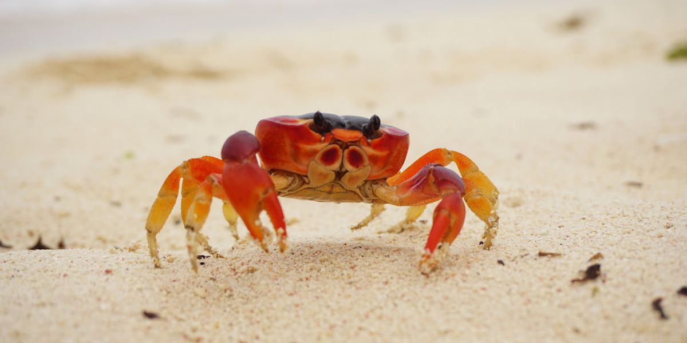

Crabs are decapod crustaceans, either the Brachyura (the "true crabs") or various groups within the closely related Anomura (hermit crabs and allies), characterised by having a heavily armoured shell, their tail segments concealed under the body, the ability to run sideways, and the habit of hiding in rocky crevices. They do not form a single natural group or clade, but have convergently evolved multiple times from the ancestral decapod body plan through carcinisation, the process of creating this set of characteristics. As a group, they are thus polyphyletic, meaning they have multiple evolutionary origins. Crabs vary in size from the pea crab, a few millimeters wide, to the Japanese spider crab, with a leg span up to 4 m (13 ft). Many crabs are free-living marine omnivores; others are specialist herbivores or carnivores, while some are parasitic. A substantial number of species are adapted to freshwater or other non-marine habitats. Crabs make up about 20% of the marine crustaceans that are caught or farmed for human consumption. In British cuisine, dressed crab is a traditional seafood meal, while in Goa and Mozambique, crab curry is a typical dish. Crabs feature in Greek and Malay mythology, and as the astrological sign Cancer. They have appeared in art in media including pottery, paintings, blouse panels, and book illustrations. Hermit crabs are often kept in aquariums and as pets. A popular meme jokes that everything will evolve into crabs, based inaccurately on the genuine evolutionary trend within the decapods.

home